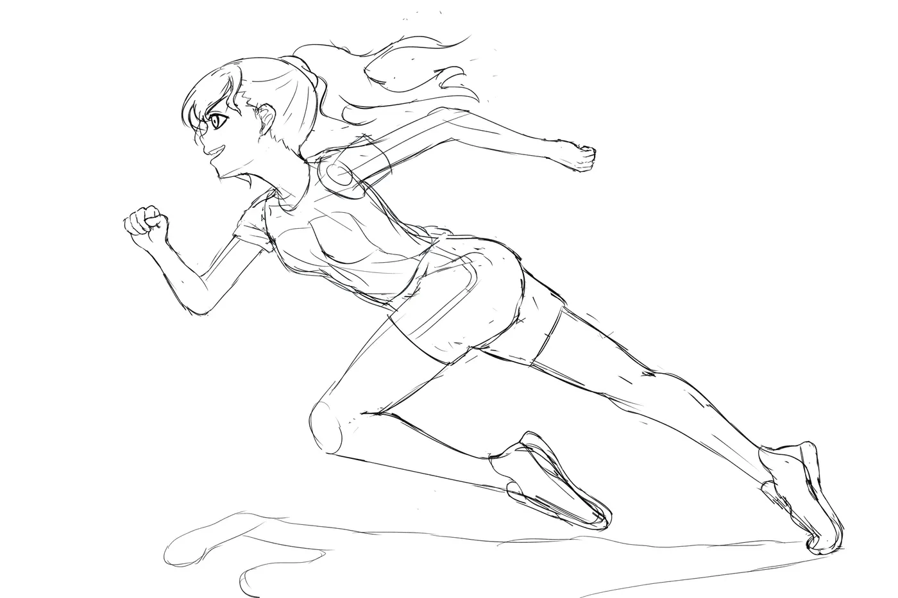

CUT NO.
CUT 008 · SPRINT A-12
DURATION (24FPS)
06 + 00k (144F)
ROLE
LO / GENGA / DOUGA / PAINT / COMP
TOOLS
CSP EX · RETAS PaintMan 6.6 · Blender · AE
Featured project · 2025
GET_SET
RUN
ゲット・セット・ラン
An original short sports animation produced by the Shiguma Dakkusu team at FPT University. Serving as Project Director and Lead Key Animator, I spearheaded the visual direction, layout (LO), and high-impact sprint sakuga sequences — capturing the raw physical weight, momentum, and emotional drive of Akari chasing a finish line only she can see.
“Beyond the finish line… ‘possibilities’ there. That is what I wish to see!”
- Role
- Director · Key Animation (Genga) · Key Visual
- Team
- Shiguma Dakkusu
- Art Lead
- Huỳnh Minh Hiếu
- Color Lead
- Lê Vĩnh Phúc
- Released
- 05.05.2025
Interactive Cut Breakdown · CUT 008 Anatomy
